Overview
The Martinos pseudoCT package generates a subject-specific attenuation map from a T1-weighted MPRAGE image using the atlas-based method described by Izquierdo-Garcia et al.
It is intended for PET/MR attenuation-correction workflows at the
Athinoula A. Martinos Center for Biomedical Imaging. MPRAGE input
can be supplied either as the original DICOM series or as a
preprocessed NIfTI image (.nii or
.nii.gz).
For normal subject processing, use
PseudoCT v3 — MLSC
(mlsc-current). PseudoCT v3 — Local
(local-current) remains available as an alternate.
Reference
D. Izquierdo-Garcia, A.E. Hansen, S. Förster, D. Benoit, S. Schachoff, S. Fürst, K.T. Chen, D.B. Chonde, and C. Catana. An SPM8-based Approach for Attenuation Correction Combining Segmentation and Non-rigid Template Formation: Application to Simultaneous PET/MR Brain Imaging. Journal of Nuclear Medicine. 2014;55(11):1825–1830.
Software acknowledgement
In addition to citing the methodological publication above, work using this tool should acknowledge Michele Scipioni, PhD, for development, integration, and maintenance of the Martinos pseudoCT software.
Software location and versions
PseudoCT is deployed at:
/usr/pubsw/packages/mrpet/standalone_apps/PseudoCT/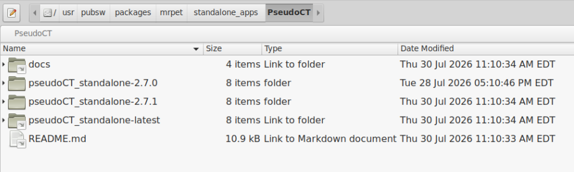
pseudoCT_standalone-latest link to the current
recommended release.
Which version should I use?
For a new subject or a new study, users should normally use
pseudoCT_standalone-latest. v3.0.2 remains the latest
published archive; the v3.2.0-rc2 source/documentation candidate is
not yet published or deployed. v2.8.4 was the last published archive before v3.0.2.
v3.0.0 was withdrawn for an MLSC validation issue, and v3.0.1
was withdrawn because its source wrapper broke the established
installation layout. v3.0.2 resolves both; its compiled scientific
executable is unchanged. The v3.2.0-rc2 candidate corrects the
MLSC MPRAGE-only profile to share the same current-lineage R2010b
artifact and fail-closed validation as the standard MLSC profile;
only collection/output/UI policy differs. It reuses the compiled
payload unchanged and adds no scientific run or deployment claim.
The accepted MLSC executable described in
the provenance record is current-lineage PseudoCT v3 compiled using
MATLAB R2010b, not the historical Aether v2 implementation. Its
association with job 10515471 is unverified; the available
scientific evidence is dataset-specific. No v3.2.0-rc2 publication
or production deployment is claimed.
If processing for a study will take place over an extended period, select a specific numbered release and use the same version for the entire study. This maintains software-version consistency across the dataset.
New versions will be deployed regularly to add functionality or fix minor issues. If a problem is discovered that makes continued use of an older version inadvisable, that change will be explicitly communicated and motivated.
Choosing an interface
The same pseudoCT orchestration is reachable four ways. All use the same canonical execution profiles; pick the one that matches how you work.
| Interface | Best for | Interactive? | Details |
|---|---|---|---|
MATLAB GUI (run_pseudo_CT with no arguments) |
Routine single-subject processing by an operator | Yes: profile dialog, file pickers, remote login | MATLAB GUI workflow |
MATLAB scripting (run_pseudo_CT with named arguments) |
Repeatable runs and batches from the MATLAB command window | Not necessarily noninteractive: omitted subjects open the GUI; remote runs may prompt for login | MATLAB scripting |
Headless API (pseudo_CT_headless) |
Programmatic callers that exchange MAT-file requests and results | No; remote submit needs a credential handoff | Headless API |
Terminal CLI (bin/pseudoct) |
Shell and automation use with text or JSON Lines output | Remote run prompts for credentials on /dev/tty |
Terminal CLI |
Related topics: execution profiles, validation and submission, remote authentication, and monitoring. The minimum MATLAB version is R2010b.
Quick start
-
Add pseudoCT to the MATLAB path.
From a checkout, add the repository root; from an installed
version, add its installation root:
addpath('/usr/pubsw/packages/mrpet/standalone_apps/PseudoCT/pseudoCT_standalone-latest') % installed numbered version layout: % addpath('/usr/pubsw/packages/mrpet/standalone_apps/PseudoCT/pseudoCT_standalone-<version>') -
Run pseudoCT.
run_pseudo_CT - Select PseudoCT v3 — MLSC for routine processing. PseudoCT v3 — Local remains available as an alternate.
- Click Browse MPRAGE... and select the first DICOM of the MPRAGE series, or select the single preprocessed NIfTI file.
- Confirm that the UMAP has been found automatically.
- Leave the automatic MPRAGE correction options enabled unless you have a specific reason not to.
- Click Run pseudoCT and keep MATLAB open until the run finishes.
- Inspect both the TIFF fusion image and the final DICOM pseudoCT before using it for attenuation correction.
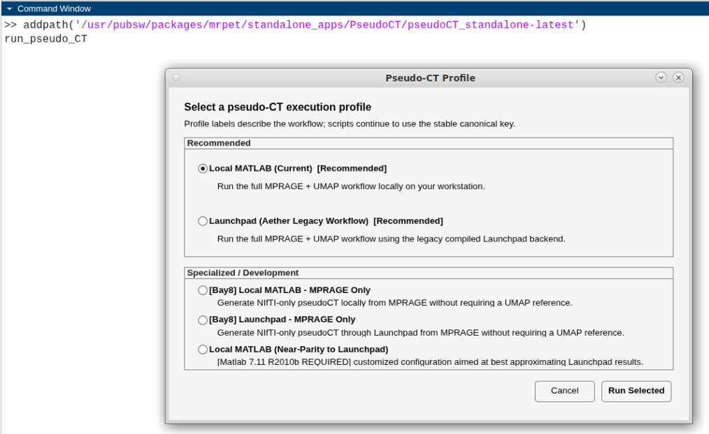
run_pseudo_CT, then choose an execution profile.
It is recommended to run pseudoCT from a working directory close to the data rather than changing into the software installation directory.
To pin processing to a numbered release, use that version explicitly (checkout root or installed version root):
addpath('/usr/pubsw/packages/mrpet/standalone_apps/PseudoCT/pseudoCT_standalone-<version>')Execution profiles
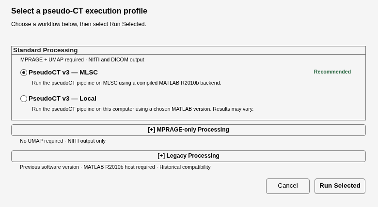
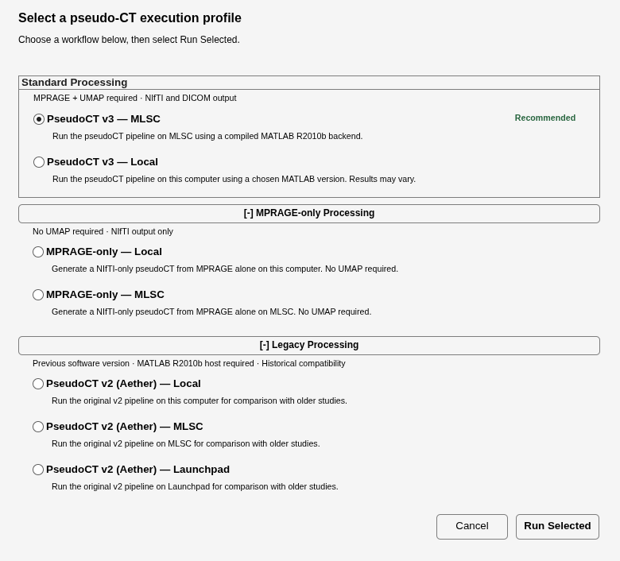
PseudoCT uses profile-based execution. Implementation
(current PseudoCT v3 lineage vs legacy-v2
compiled Aether v2 backend) and execution (local
workstation vs mlsc cluster vs
launchpad remote) are independent properties.
Current and Legacy follow different numerical paths; no
universal equivalence is claimed. Always inspect the QC image.
The selector groups profiles as Standard Processing,
MPRAGE-only Processing, and
Legacy Processing. Standard Processing presents
PseudoCT v3 — MLSC (mlsc-current) as
the recommended default and keeps PseudoCT v3 — Local
(local-current) available. The labels are display
names; canonical profile IDs remain unchanged. PseudoCT v3 — MLSC
uses the current lineage compiled with MATLAB R2010b, not the
historical Aether v2 implementation. It fails closed if required runtime or artifact
validation fails and does not silently fall back to Local or a
historical profile.
MPRAGE-only Processing and
Legacy Processing are separate groups. MPRAGE-only
contains MPRAGE-only — Local
(local-mprage-only) and
MPRAGE-only — MLSC
(mlsc-mprage-only); both generate NIfTI-only output
without a UMAP. Legacy contains
PseudoCT v2 (Aether) — Local
(local-legacy),
PseudoCT v2 (Aether) — MLSC
(mlsc-legacy), and
PseudoCT v2 (Aether) — Launchpad
(launchpad-legacy); site resources may be unavailable.
The development profile (devel) is not in the routine
selector and is not one of the seven CLI/headless keys. Scripts use canonical profile
keys, not display labels. The bare key
mlsc is a deprecated alias for
mlsc-legacy; deprecated Launchpad aliases are not
supported.
Standard profiles require the UMAP reference and produce both NIfTI and DICOM output. MPRAGE-only profiles do not require a UMAP and produce NIfTI output only.
mlsc-mprage-only uses the current-lineage R2010b
compiled artifact shared with mlsc-current, not the
legacy Aether backend. The same explicit artifact overrides and
fail-closed integrity checks apply; missing or invalid files never
trigger a legacy fallback.
Profile keys at a glance
The terminal CLI and the headless API accept exactly these seven canonical keys:
| Key | Environment / lineage | MPRAGE-only? | Output policy |
|---|---|---|---|
local-current |
Local / current compiled payload | No | NIfTI + DICOM |
local-legacy |
Local / legacy v2 (Aether) | No | NIfTI + DICOM |
local-mprage-only |
Local / current | Yes | NIfTI only |
mlsc-current |
MLSC / current compiled payload | No | NIfTI + DICOM |
mlsc-legacy |
MLSC / legacy v2 (Aether) | No | NIfTI + DICOM |
mlsc-mprage-only |
MLSC / inherits current | Yes | NIfTI only |
launchpad-legacy |
Launchpad / legacy v2 (Aether) | No | NIfTI + DICOM |
A devel profile file is discovered by profile
listing, but it is not one of the seven CLI/headless keys and is
hidden from the routine GUI selector.
PseudoCT v3 — MLSC
Recommended default
Runs the full MPRAGE + UMAP workflow on MLSC using the current
PseudoCT v3 lineage compiled with MATLAB R2010b
(mlsc-current). This is not the historical v2 Aether
implementation. Requires a valid
cluster account and provisioned resources. The accepted
current-lineage artifact uses MATLAB R2010b, Compiler 4.14, and
MCR 7.14; an unmet artifact/runtime requirement fails closed.
PseudoCT v3 — Local
Available
Runs the full MPRAGE + UMAP workflow locally on the workstation
using the shared compiled current-science payload
(local-current).
This remains an available alternative to PseudoCT v3 — MLSC.
PseudoCT v2 (Aether) — Local
Historical
Runs the full MPRAGE + UMAP workflow locally on the workstation
using the legacy v2.0 compiled backend
(local-legacy) with direct-local execution. There
is no login dialog and no cluster submission on this path.
Selectable under Legacy Processing for historical compatibility.
Legacy profiles require a MATLAB R2010b host.
PseudoCT v2 (Aether) — MLSC
Historical
Runs the standard MPRAGE + UMAP workflow on the MLSC cluster
using the legacy v2.0 compiled backend
(mlsc-legacy). It requires the UMAP reference and
produces both NIfTI and DICOM output. Legacy profiles require a
MATLAB R2010b host.
Use requires a valid cluster account and provisioned paths.
PseudoCT v2 (Aether) — Launchpad
Historical
Runs the full MPRAGE + UMAP workflow on the legacy remote path
(launchpad-legacy), selectable under Legacy
Processing. Legacy profiles require a MATLAB R2010b host. No new
correctness claim is made beyond the dataset-specific states
recorded in the technical notes.
This group contains MPRAGE-only — Local
(local-mprage-only; generate NIfTI-only pseudoCT
from MPRAGE alone on this computer, no UMAP required) and
MPRAGE-only — MLSC
(mlsc-mprage-only; generate NIfTI-only pseudoCT
from MPRAGE alone on MLSC, no UMAP required).
They are not intended for routine use.
The deprecated keys (launchpad,
launchpad-mprage-only,
local-near-parity-r2010b) are never shown in the
selector and are not supported.
MLSC remote workflow
PseudoCT v3 — MLSC (mlsc-current) is the current-lineage
standard MLSC workflow. mlsc-legacy remains available
separately under Legacy Processing. A user-accepted R2010b
run verified MLSC completion and copyback, DICOM output, output
promotion, and cleanup for one dataset; this does not establish
universal numerical equivalence or clinical correctness.
The accepted run is dataset-specific and does not establish universal parity. Cluster accounts and paths remain site-provisioned. Executor host, CPU allocation, and build identity must not be inferred from profile configuration or from this acceptance record.
Login dialog
When a remote profile is selected, MATLAB shows a login dialog asking for the cluster username and password. Credentials are entered at runtime, held only for the connection, and never saved in profiles, scripts, logs, or outputs. Cancelling the login dialog stops before any cluster work is submitted. A rejected login fails without any submission attempt.
Account dialog
After a successful login, available cluster accounts are discovered at runtime. If no account is available, processing stops before submission. If one account is available, it is selected automatically. If several accounts are available, a single-selection dialog is shown; cancelling that dialog submits nothing. The selected account is used only for that run and is not saved.
Progress, completion, and failure
After submission, MATLAB monitors the cluster job and then performs local finalization (including DICOM output for standard profiles). Keep MATLAB open until the run finishes. Closing MATLAB can leave remote work unfinalized even when the cluster job has continued.
A run completes only when the required attenuation map is present and non-empty and local finalization succeeds. Anything else — a failed connection, no account, a cancelled dialog, a failed or cancelled cluster job, a missing or empty attenuation map, or a finalization problem — stops before promotion and leaves the run log and temporary files for diagnosis. Rerunning restarts from the beginning.
The profile summary is written before dispatch: it records the canonical profile ID, submitter MATLAB, configured scientific paths/settings, and requested aliasing/recentering options. Those settings are not proof that a step ran. No per-stage confirmation is recorded for aliasing or recentering, so their completion is Not confirmed. After an MLSC job, the application refreshes the summary from that run's lifecycle/finalization evidence when available. Scheduler state and local finalization describe recorded current-run outcomes; executor hostname, CPU, runtime, and build remain unknown unless an actual record proves them. Missing facts are shown as Not confirmed or Not recorded, not inferred from the configured scheduler or final status.
Logs
Each subject receives a detailed run log under
MR_PET plus the usual
pseudo_CT_profile_summary.txt. Keep both with the
QC image when asking for support. They record the selected
profile, stages, and final status without credentials.
See the detailed MLSC pipeline documentation for the full technical contract, readiness checks, and output handling.
Preparing the input data
The standard PET/MR workflow requires a T1-weighted MPRAGE and a corresponding UMAP. PseudoCT supports either the original MPRAGE DICOM data or a preprocessed MPRAGE NIfTI. MPRAGE-only profiles are the exception: they do not require a UMAP and produce NIfTI output only.
DICOM MPRAGE
The minimum required folder structure is:
<subject>/
└── MR/
├── MPRAGE/
└── UMAP/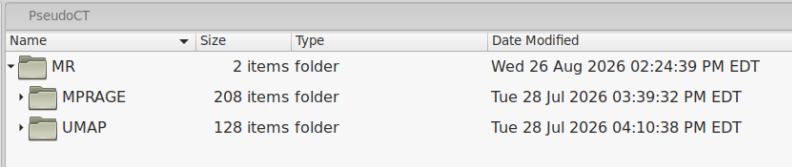
When selecting the MPRAGE, choose the
first DICOM file of the MPRAGE series. The
MR_PET folder does not need to exist before processing;
pseudoCT creates it.
Preprocessed NIfTI MPRAGE
If preprocessing is needed, place the resulting .nii or
.nii.gz image in <subject>/MR_PET/.
The original MR/MPRAGE and MR/UMAP folders
may remain in place.
<subject>/
├── MR/
│ ├── MPRAGE/
│ └── UMAP/
└── MR_PET/
└── preprocessed_mprage.nii.gz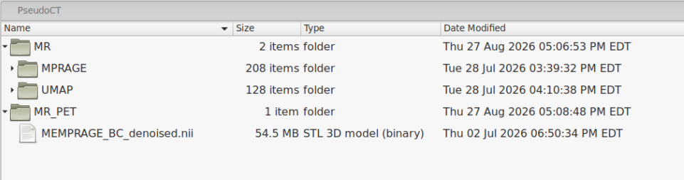
In some subjects, noise in the image background can interfere with segmentation and can ultimately produce spurious tissue-like attenuation values outside the head. Background cleanup may be useful in those cases. A dedicated preprocessing tool is planned for release.
MATLAB GUI workflow (single subject)
Start the GUI by calling run_pseudo_CT with no
arguments:
run_pseudo_CT- The Pseudo-CT Profile dialog opens ("Select a pseudo-CT execution profile"). Choose a workflow, then click Run Selected. Cancel selects no profile and starts nothing.
- The subject-input dialog opens. Click Browse MPRAGE... and select the first DICOM file of the series, or the single NIfTI file.
- For standard profiles the UMAP is discovered automatically; if no UMAP is found, the dialog reports it and you use Browse UMAP... to supply one explicitly.
- Review the MPRAGE correction options, then click Run pseudoCT. This single action performs local validation first and then submission. There is no separate Validate button; if validation fails, a "Run validation failed" message asks you to fix the inputs or options and click Run pseudoCT again.
- For a remote profile, the MLSC submit login dialog asks for credentials (see Remote authentication).
-
Keep MATLAB open until the run finishes. Outputs are written to
MR_PET,MR_PET/tmp(working files), andMR/pseudo_muMAP(final DICOM) next to the input data; see Outputs.
Some screenshots below were captured with earlier button labels (for example "Load MPRAGE" and "OK"); the labels in the list above are the current ones.
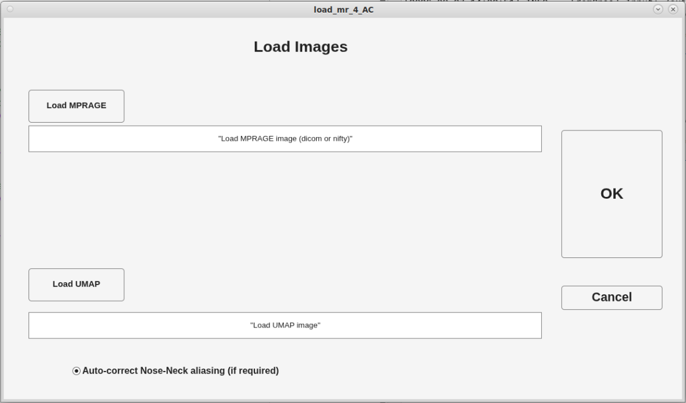
1. Load the MPRAGE
Click Browse MPRAGE.... For DICOM input, select the
first file in the MPRAGE series. For NIfTI input, select the single
.nii or .nii.gz file.
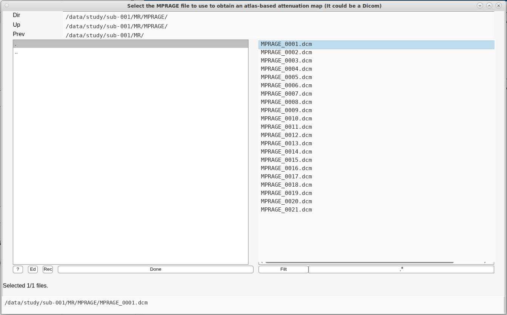
2. Confirm the UMAP (standard profiles)
When the expected directory structure is present, pseudoCT
automatically searches the sibling MR/UMAP folder and
populates the UMAP field. In normal use, you should not need to
click Browse UMAP... manually; use it only when
discovery finds no UMAP or you want a different one. MPRAGE-only profiles
skip this step by policy because they do not use a UMAP reference.
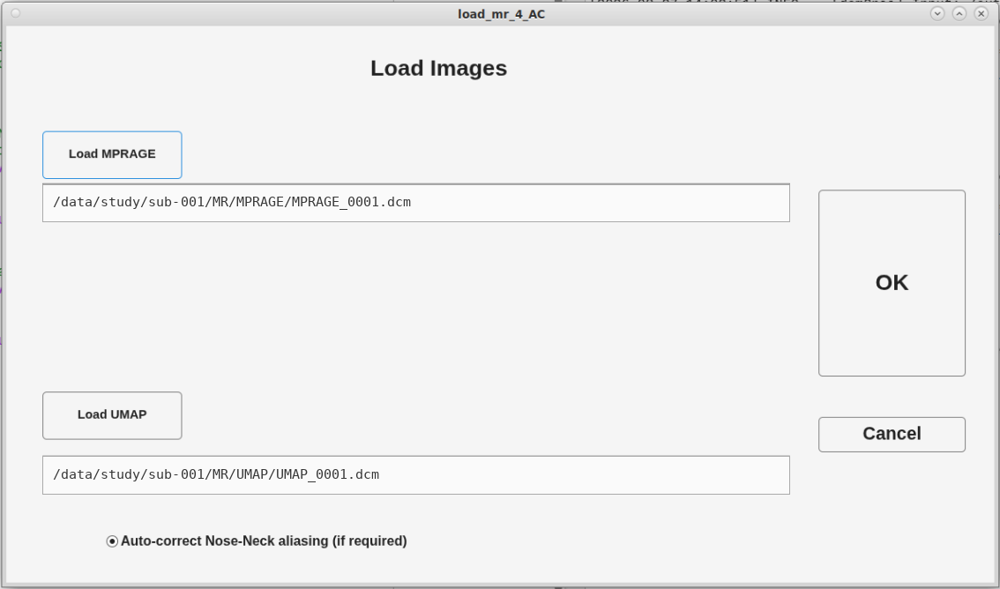
3. MPRAGE correction options
PseudoCT can apply automatic preprocessing to improve segmentation and registration to the MNI atlas, including correction of nose/neck wrap-around aliasing and recentering of the brain within the field of view.
Leave automatic aliasing correction and recentering enabled. The application determines whether a correction is actually required, so leaving these options ON is the preferred approach in most cases.
The preprocessing controls are currently being revised, so their exact appearance may change between releases.
4. Start processing
Once the input paths are correct, click Run pseudoCT. Local validation runs first, then submission. MATLAB must remain open for the duration of the run. Cancelling or closing the dialog starts no processing.
Batch processing
Multiple subjects can be selected in one run using the batch file picker:
run_pseudo_CT('profile', 'local-current', 'subjects', 'batch')Select the first MPRAGE DICOM for each subject (or the desired NIfTI input for each subject), then click Done. PseudoCT processes the selected subjects sequentially and discovers each subject's UMAP from the expected folder structure.
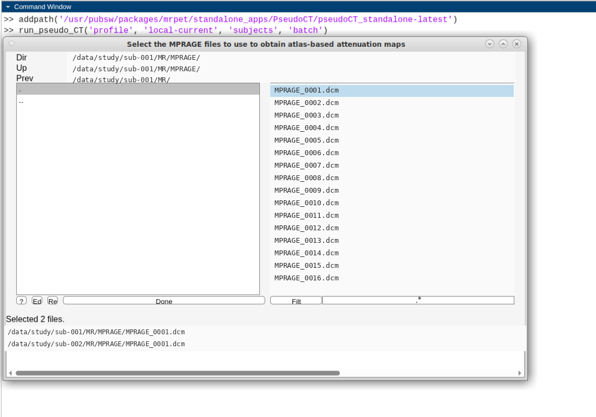
For a long-running study, run the batch with the same numbered pseudoCT release used for the rest of the study rather than switching versions midway through processing.
MATLAB scripting
Call run_pseudo_CT from the MATLAB command window with
name/value arguments (MATLAB R2010b minimum):
run_pseudo_CT( ...
'profile', 'local-current', ...
'subjects', {'/path/to/MPRAGE.dcm'}, ...
'umap_files', {'/path/to/UMAP.dcm'});
Explicit UMAP paths are paired positionally with the subjects and
are not replaced. Empty or omitted UMAP values trigger local
discovery. When a profile and explicit subjects are given, as in
the example above, validation requires a readable UMAP for every
subject; if none is supplied or discovered, validation fails with
an error and the run does not start. Skipping a subject without a
UMAP applies only to the internal subject-list collection path
(collect_jobs / build_jobs_from_subject_list),
not to this call. MPRAGE-only profiles accept no UMAP.
If subjects is omitted or empty, the single-subject
GUI opens. 'subjects', 'batch' opens a multi-select
file picker. A remote profile run without headless mode can
prompt for MLSC login. For unattended use, see the
Headless API or the
Terminal CLI.
Named arguments
| Name | Default | Accepted type |
|---|---|---|
profile | '' | char |
subjects | '' | char or cell ('batch' opens the picker) |
umap_files | [] | empty, char, or cell |
resolved_jobs | struct([]) | struct |
correct_aliasing | [] | empty or scalar 0/1 (numeric or logical) |
recenter_before_normalization | [] | empty or scalar 0/1 (numeric or logical) |
cleanup_on_success | [] | empty or scalar 0/1 (numeric or logical) |
mlsc_host_key_provider | [] | empty, char, or function handle |
mlsc_current_artifact_root | '' | char |
headless_mode | false | scalar logical |
headless_credentials | struct() | scalar struct |
group_account | '' | char |
Omitted processing options use the selected profile's defaults. Scripts use canonical profile keys, not display labels.
Headless API
pseudo_CT_headless(request_path, result_path) is the
noninteractive MATLAB entry point (R2010b minimum). The request is
a MAT v5 file containing one scalar struct named
request; the result is a MAT file written at the path
you choose.
-
Request schema:
pseudoCT.headless-request/v2. Result schema:pseudoCT.headless-result/v2. -
Two actions:
validatethensubmit. Validation returns a resolved job in the result;submitmust carry that resolved job (and empty subjects, UMAP, options, output config, and artifact-root override) bound to the same profile and invocation ID. - Validation is local-only and does not authenticate.
-
A remote
submitrequires a credential handoff (credential_handoff). The request holds only the handoff path, never credential values. - Profiles are limited to the seven canonical keys.
Result status is ready,
submitted, or failed. A bad argument
count or path at the API boundary throws before a result is
saved; request-level failures are saved as a failed result.
The shell wrapper bin/pseudoct-headless REQUEST.mat
RESULT.mat runs this API through MATLAB (the
PSEUDOCT_MATLAB environment variable, or the default
MATLAB 7.11). Its launcher codes are 64 (wrong argument count),
65 (request missing or unreadable), 66 (invalid result path), 69
(MATLAB unavailable), and 70 (runtime or bootstrap failure); codes
0, 2, and 3 pass through from the MATLAB result only when a usable
result file exists.
Full request fields, result fields, and error codes are in the headless and CLI reference.
Terminal CLI
bin/pseudoct wraps the headless API for shell use. It
has two commands, validate and run.
bin/pseudoct --help
# Validate one subject (local only, no authentication)
bin/pseudoct validate --profile local-current \
--mprage /path/to/MPRAGE.dcm --umap /path/to/UMAP.dcm
# Validate, then submit
bin/pseudoct run --profile local-current \
--mprage /path/to/MPRAGE.dcm --umap /path/to/UMAP.dcm
# Multiple subjects from a config file, JSON Lines output
bin/pseudoct run --profile mlsc-current --config job.json --format jsonlOptions
| Option | Meaning |
|---|---|
--profile NAME | Required. One of the seven canonical keys. |
--mprage FILE --umap FILE | One subject. --umap may be omitted so the UMAP is discovered during validation. |
--config job.json | Multi-subject JSON object. |
--correct-aliasing yes|no | Override the profile default. |
--recenter-before-normalization yes|no | Override the profile default. |
--cleanup-on-success yes|no | Override the profile default. |
--current-artifact-root PATH | Validation override for the current-lineage MLSC artifact (mlsc-current, mlsc-mprage-only); rejected for local-current profiles. |
--group-account ACCOUNT | MLSC account selection for run. |
--host-key-file FILE | Optional MLSC strict host-key input. |
--credential-handoff FILE | Existing authorized single-use handoff; see Remote authentication. |
--format text|jsonl | Output format (default text). |
The job.json file
A JSON object with a required, non-empty mprage array
of strings and an optional umap array of equal length.
No other keys are allowed.
{
"mprage": ["/data/subj1/MR/MPRAGE/0001.dcm", "/data/subj2/MR/MPRAGE/0001.dcm"],
"umap": ["/data/subj1/MR/UMAP/0001.dcm", "/data/subj2/MR/UMAP/0001.dcm"]
}Exit codes
| Code | Meaning |
|---|---|
0 | Validated, or run completed and verified |
64 | Usage or configuration error |
65 | Invalid request |
66 | Authentication failure |
67 | Submission failure |
68 | Scientific failure or completion unverified |
69 | Launcher or runtime failure |
Where CLI files go
The CLI's own request, result, summary, and diagnostic files are
kept in a private (mode 700) directory
<install-root>/scratch/YYYY-MM-DD/<time>-pseudoct-cli.XXXXXX
and removed when the command exits. Scientific outputs are not
placed there; see Outputs.
Validation and submission
-
Validate is local-only and never authenticates.
It checks the profile, inputs, output writability, runtime, and
artifact integrity, and returns a resolved job
(
pseudoCT.resolved-job/v1) describing exactly what would run. -
Submit (CLI
run) requires a validated job, rechecks it, and fails closed if the inputs have changed since validation.bin/pseudoct runand the GUI's Run pseudoCT both validate first and then submit. -
Local submit is synchronous: it returns when the
local run ends, and succeeds only if scientific completion is
completed.
For remote profiles, scheduler job IDs with
submission_status accepted mean the
scheduler took the job. They do not mean the science finished.
Treat a run as successful only when
scientific_completion is completed
(verified), and still inspect the QC output.
Remote authentication
- GUI: remote MLSC profiles show the MLSC submit login dialog; Launchpad uses a "Login for: <host>" dialog. Cancelling stops before any submission.
-
CLI: a remote
runprompts for credentials on/dev/ttywith echo disabled. Values are staged briefly in an owner-only directory under/dev/shmand erased after use. -
Noninteractive callers:
--credential-handoff FILE(and the API'scredential_handofffield) consumes an existing, authorized, single-use handoff. It is not a password file and not a way to store a password. - Never put passwords in command arguments, scripts, profiles, request files, or logs. Validation never authenticates.
During processing
MATLAB prints stage-by-stage status messages and writes a detailed
run log in
MR_PET.
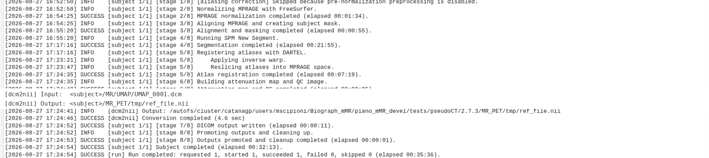
Interrupting a run
There is no documented cancellation API. The CLI exits when it receives an interruption signal, but whether a running child process is stopped, and whether intermediate files are kept, depends on the profile and has not been verified. Check for leftover processes before running again.
Starting pseudoCT again for the same subject restarts processing from the beginning and overwrites existing processing files as needed.
Closing MATLAB ends the MATLAB session that drives the run. For MLSC, MATLAB must remain open while the cluster job is monitored and while local finalization is performed.
Monitoring CLI and headless runs
A run reports stage-by-stage progress while it works and ends with
a final result. Local Current console progress uses ten stages
(nine for NIfTI-only output); long-running steps print
INFO heartbeat rows naming the active operation, and
in JSONL each stage event carries the full label, for example
"[6/10]". This ten-stage CLI presentation has been
verified by offline replay of recorded formatter inputs and captured
presenter output; the repository does not include a real scientific
run record for this presentation. With --format jsonl the CLI writes one
JSON object per line on standard output.
-
Progress records carry
type,timestamp,level, andmessage, plussubject,stage,status, andjobwhen known (omitted otherwise). -
Final record: the last line is a
type=resultrecord with the invocation ID, action, profile, outcome,exit_code,submission_status,scientific_completion,job_ids,error_code, anderror_message. Read success fromexit_code0 andscientific_completion, not from submission alone. -
Errors: CLI errors are printed to standard
error, and JSONL error paths also emit a
type=resultrecord on standard output.
The launcher captures the child MATLAB process's standard error into a private diagnostics file and does not forward it. Do not rely on seeing child diagnostics on your terminal.
No cancellation API is provided. The CLI exits on interruption signals, but whether a running child process is stopped and whether intermediate files are kept depends on the profile and is not verified; check for leftover processes before re-running (see During processing).
Outputs
PseudoCT creates the required output directories automatically. After a successful PseudoCT v3 — Local run, the subject directory contains:
<subject>/
├── MR/
│ ├── MPRAGE/
│ ├── UMAP/
│ └── pseudo_muMAP/
│ └── final DICOM pseudoCT series
└── MR_PET/
├── att_map.nii
├── Fusion_MR_Pseudo_CT_validation.tiff
├── MPRAGE_spm.nii
├── MPRAGE_spm_normalized.nii
├── Pseudo_CT_AC_Version.txt
├── pseudo_CT_local-current_*.log
└── pseudo_CT_profile_summary.txt
Standard remote profiles use the same final output layout after
cluster processing and local finalization. Their required
output is MR_PET/att_map.nii; the QC fusion TIFF,
version record, and normalized MPRAGE are included when
produced. MPRAGE-only profiles do not require a
UMAP and produce NIfTI output only, so they do not create the final
DICOM series under MR/pseudo_muMAP/.
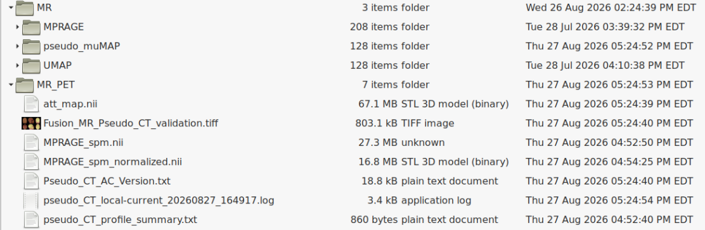
MR/pseudo_muMAP/
The final pseudoCT is written here as a DICOM series for downstream PET/MR use.
att_map.nii
The final pseudoCT attenuation map in NIfTI format.
Fusion_MR_Pseudo_CT_validation.tiff
QC image used to inspect MPRAGE/pseudoCT coregistration.
pseudo_CT_local-current_*.log
Detailed processing log for the subject.
pseudo_CT_profile_summary.txt
Concise provenance record of the selected profile, important settings, and MATLAB environment.
Pseudo_CT_AC_Version.txt
Records the pseudoCT software version and associated release history.
Profile provenance
The profile summary is a bounded provenance record, not a complete account of exactly how a subject was processed. It distinguishes configured/requested settings from outcomes actually recorded for the current run.
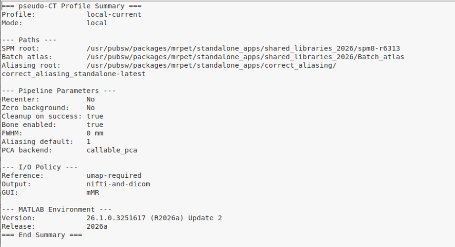
pseudo_CT_profile_summary.txt from a
PseudoCT v3 — Local run.
During processing, intermediate files are staged under
MR_PET/tmp/. On a successful run this temporary
directory is cleaned up. If processing is interrupted, intermediate
files may remain; this depends on the profile and is not verified.
Where outputs go, by interface
-
Scientific outputs (all interfaces) are resolved
relative to each input:
<subject-root>/MR_PETfor NIfTI, QC, version, and log files, working files in<subject-root>/MR_PET/tmp, and the DICOM series in<MR>/pseudo_muMAP(not for MPRAGE-only profiles). -
CLI scratch files: the CLI's request, result,
summary, and diagnostic files live under
<install-root>/scratch/...and are removed on exit. -
Headless API: the result is saved as a
RESULT.matat the path the caller chooses; its parent folder must already exist and be writable.
Quality control
Every generated pseudoCT should be visually inspected before it is used for PET attenuation correction. QC has two parts: coregistration review and direct inspection of the final attenuation map.
1. Check MPRAGE / pseudoCT coregistration
Open Fusion_MR_Pseudo_CT_validation.tiff from
MR_PET. Inspect the overlaid MPRAGE and pseudoCT in all
displayed orientations.
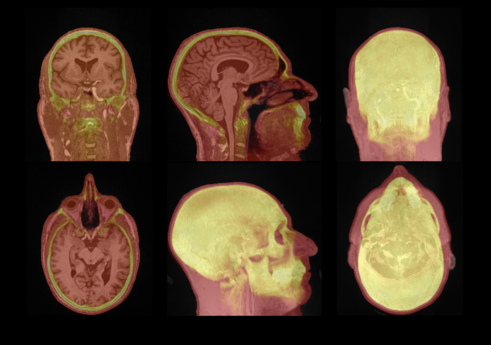
Look for:
- consistent alignment of the pseudoCT with the MPRAGE anatomy;
- agreement of the skull and brain contours;
- reasonable alignment around the nose, sinuses, and posterior head;
- no gross atlas-registration mismatch;
- no missing, displaced, or obviously distorted skull regions;
- no obvious failure related to poor positioning of the brain within the field of view.
2. Inspect the final DICOM pseudoCT
Open the DICOM series in MR/pseudo_muMAP/ using a
proper DICOM image viewer and scroll through the entire volume. Do
not rely only on the TIFF fusion image.
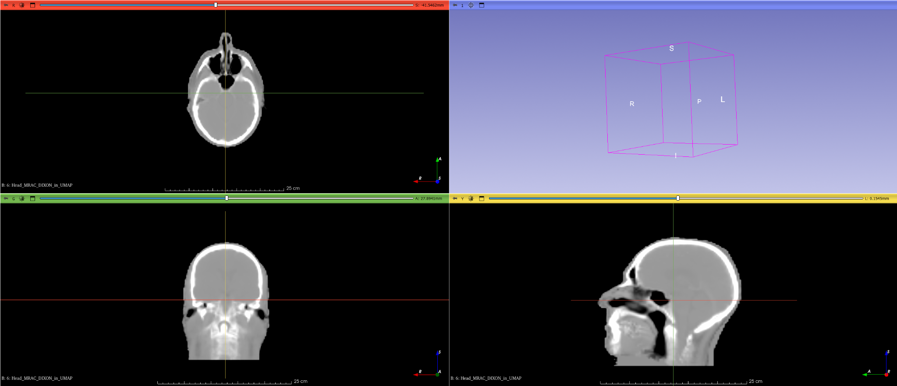
Inspect for unexpected attenuation values or artifacts inside and outside the head. A known failure mode is background noise in the MPRAGE being segmented and classified as soft tissue instead of air, producing spurious tissue-like attenuation in the background.
Do not use the pseudoCT without further review. Clean the MPRAGE
background, save the cleaned image as a NIfTI file under
MR_PET, and rerun pseudoCT. A dedicated
background-cleanup tool is planned for release.
Troubleshooting
| Problem | What to check |
|---|---|
run_pseudo_CT is not found |
Confirm that the actual
pseudoCT_standalone-latest or numbered-release
directory was added to the MATLAB path.
|
| The UMAP field does not auto-populate |
Confirm that the subject contains an
MR/UMAP folder with the correct UMAP acquisition
and that the MPRAGE comes from the expected subject directory.
|
| Processing was interrupted |
Intermediate files may remain under MR_PET. Rerun
pseudoCT; processing restarts from the beginning and
overwrites existing processing files as needed.
|
| MPRAGE and pseudoCT are visibly misregistered | Do not use the result. Verify the selected MPRAGE, inspect positioning, leave the automatic correction options enabled, and rerun. Review the log if the problem persists. |
| Soft-tissue-like attenuation appears in the background |
Inspect the MPRAGE for background noise. Clean the background,
place the resulting NIfTI in MR_PET, and rerun
pseudoCT.
|
| Launchpad profile confusion |
Only launchpad-legacy is selectable
(availability restoration only). The deprecated keys
(launchpad, launchpad-mprage-only)
are never shown in the selector and are not supported.
Use PseudoCT v3 — MLSC for routine processing; PseudoCT v3 —
Local remains available as an alternate.
|
| MLSC does not submit | Confirm the login dialog was accepted with correct credentials. Cancelling the login dialog or the account-selection dialog stops before submission, and a user with zero available accounts cannot submit. Check the run log for the exact stage message. Retain the failure detail for support. |
CLI exits 64 (usage/configuration) |
Check the command-line options. For --config,
the JSON may contain only mprage (required,
non-empty) and umap (optional), and the two
arrays must be the same length.
|
CLI exits 65 or validation fails (invalid request) |
Typical causes: a missing UMAP, a profile not allowed, or
unreadable input or output paths. Fix the input and run
validate again.
|
CLI exits 66 (authentication) |
Login was rejected or no usable credentials were provided.
See Remote authentication. A
--credential-handoff is single-use and must
already exist and be authorized.
|
CLI exits 67 (submission failure) |
Submission failed, was rejected, or its acceptance is
unresolved. Check the final type=result record
for submission_status, any job IDs,
error_code and error_message
before retrying, to avoid duplicate submission.
|
CLI exits 68 (scientific failure / unverified) |
The job was dispatched or accepted but completion is not
verified. Accepted is not completed; inspect
scientific_completion, the run log, and
MR_PET.
|
CLI exits 69 (launcher/runtime) |
MATLAB could not be started. Set
PSEUDOCT_MATLAB to an executable MATLAB; the
default is /usr/pubsw/common/matlab/7.11/bin/matlab.
The headless launcher also uses 70 for runtime or bootstrap
failures.
|
| MLSC finishes without an attenuation map |
A finished cluster job alone is not sufficient. Confirm
that MR_PET/att_map.nii is present and
non-empty. Local finalization is not started when this
check fails; retain the log and temporary files for
diagnosis.
|
Keep the run log, pseudo_CT_profile_summary.txt, QC
TIFF, and software version available. These files usually provide
the most useful first-pass information for diagnosing a failed or
suspicious run.
PIANO integration
The recommended public interface for PIANO is
bin/pseudoct with --format jsonl; PIANO
should not invoke the MATLAB GUI directly or reimplement pseudoCT
orchestration. The intended flow is:
- PIANO collects the profile, inputs, and processing options.
- PIANO invokes
validatebefore enabling submission. - For remote profiles, PIANO obtains credentials through its own login dialog.
- The backend securely creates the CLI-supported single-use credential handoff.
- PIANO runs the CLI with
--format jsonl. - PIANO parses progress and result records.
- PIANO presents subject, stage, status, scheduler job IDs, and errors.
- PIANO distinguishes accepted submissions from verified scientific completion.
The PIANO backend credential-handoff adapter and end-to-end PIANO integration are not yet implemented or verified.
Known limitations
The Local Current ten-stage console model (nine when DICOM output is omitted) is implemented. The ten-stage CLI presentation has been verified by offline replay of recorded formatter inputs and captured presenter output; the repository does not include a real scientific run record for this presentation.
- MLSC and Launchpad keep separate, unverified presentation behaviour (
WAITheartbeats and their own stage numbering) and must not be assumed to match Local Current.
Treat the run log, the final result record, and the QC outputs as the reliable record of a run.
More information
This page is intentionally an operator guide. Detailed implementation, validation, numerical-parity, release-history, and developer documentation are maintained with the source repository. See the headless and CLI reference, the MLSC pipeline documentation, the Launchpad Legacy availability note, the numerical parity assessment, the v3.0.2 changelog entry, and the accepted artifact provenance record for validation material and limits.
Maintainer: Michele Scipioni, PhD — mscipioni@mgh.harvard.edu